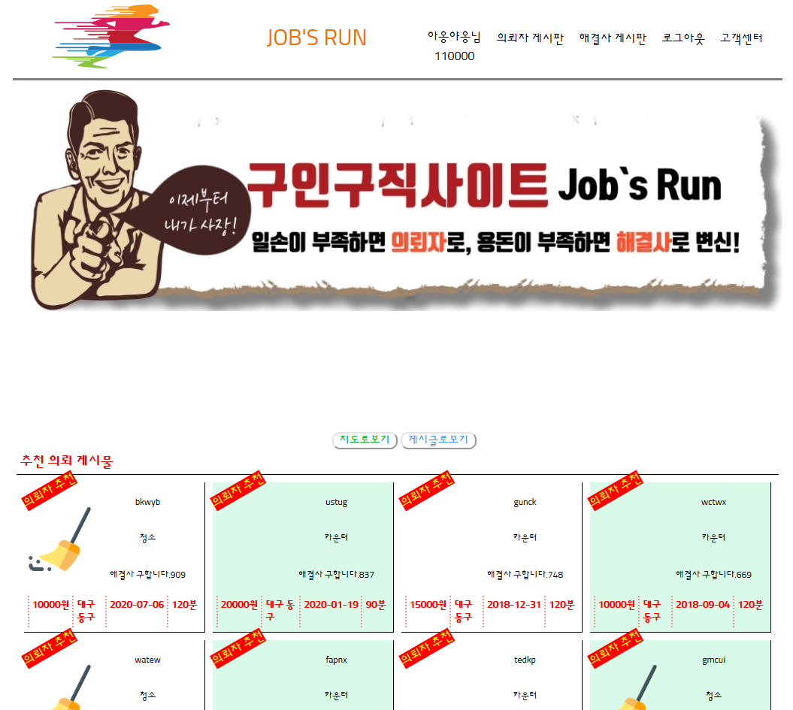
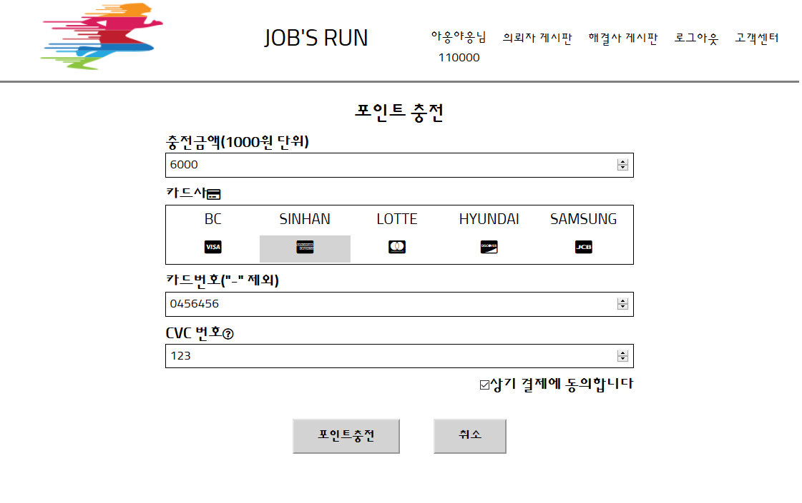
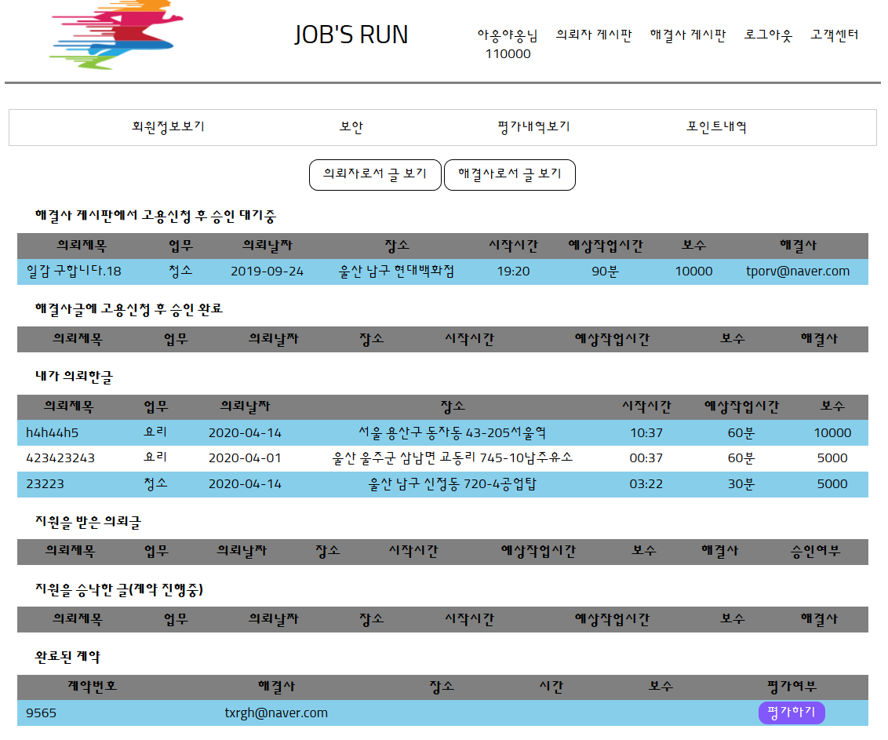
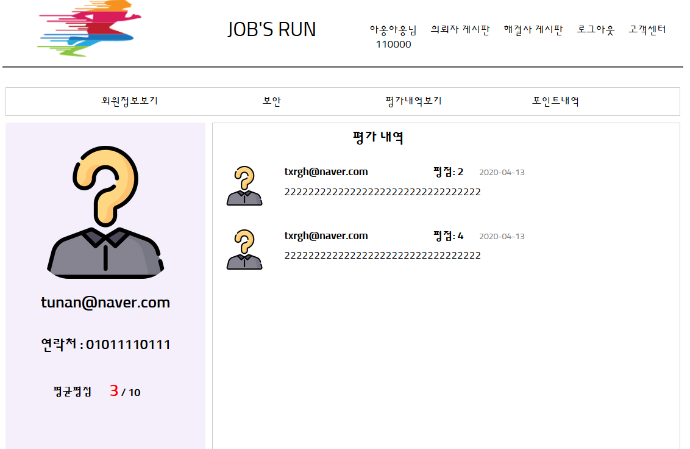
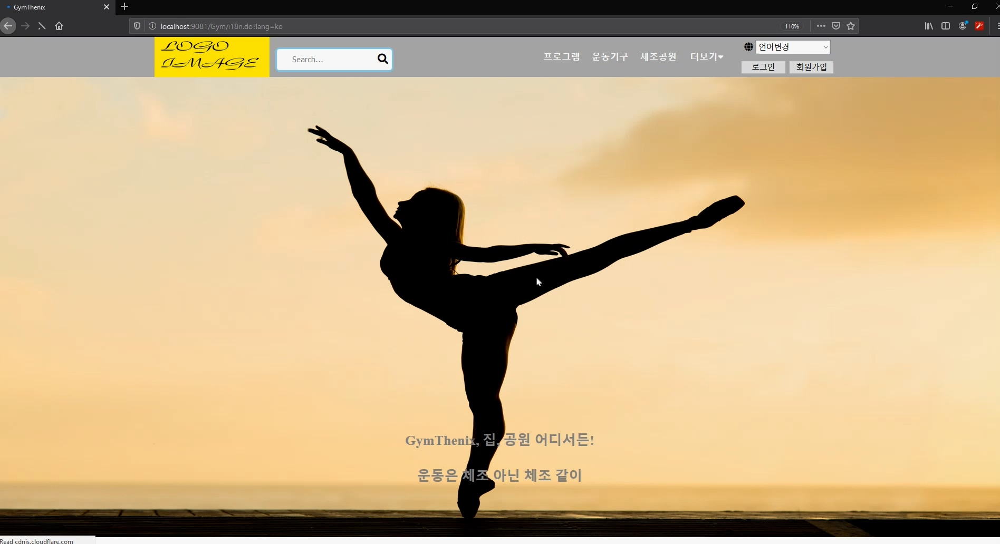
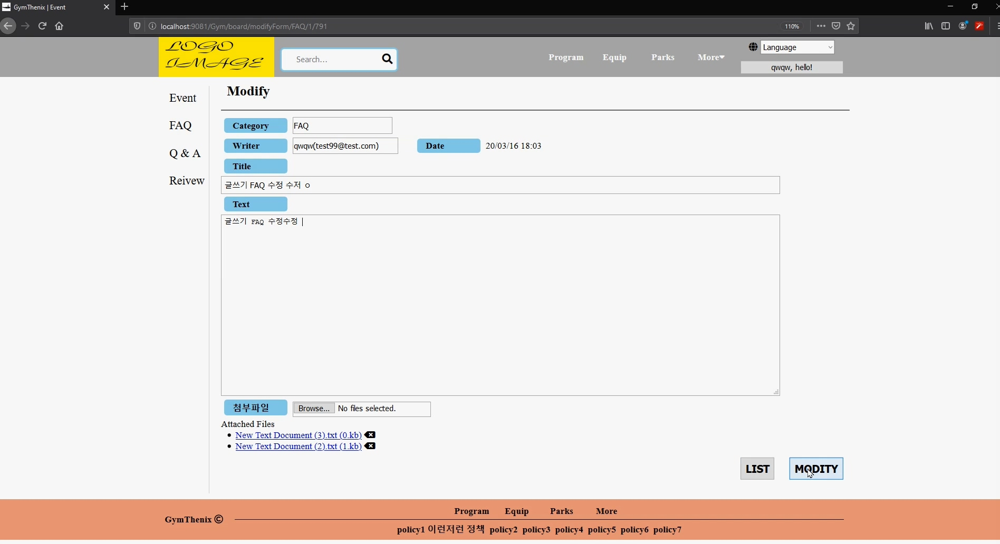

백인환 이 한 것들
| 2020.04 - 개발 중 |
Korban Dictionary 실생활 단어 사전
|
|
|---|---|---|
|
2020.03 - 2020.04 (약 4주) |
Jobsrun (동네 초단기알바 웹)
팀 포트폴리오로써 팀워크를 하였다. 같은 동네의 중고물품을 사고파는 '당근마켓'을 벤치마킹해서 같은 동네에 작은 일손을 도와주며 일하고 돈을 주고받을 수 있다. 본인이 맡은 부분은 전반적인 관리 및 테스트 검증, 현금처럼 오가는 포인트 관리, 고객센터와 평점 및 평가와 마이페이지를 맡아서 개발하였다. 웹 애플리케이션의 전반적인 기획과 흐름을 디자인했다. 또한, 기획한 대로 실행되는지 테스트를 했고, 수정사항과 개선할 점 찾기를 주로 하였다. 또한, 회원들의 포인트 관리(CRD), 회원의 평점과 평가(CRD), 그리고 고객센터 게시판(CRUD)을 맡아서 개발하였다. 또한, 팀원들에게 기술적으로 도움을 많이 주고 격려하며 협업의 효율을 증진했다.

   |
|
|
2020.02 - 2020.03 (약 3주) |
본인 혼자서 모든 것을 기획하고 설계하고 만들었다. Spring Framework를 이용해서, 다국어 웹페이지, 인터셉터, 회원, 게시판, 게시글 첨부 파일과 댓글의 CRUD를 구현했다. 인터셉터를 이용해서 사용자의 언어설정을 읽어오고, 게시판에 글쓰기에서도 인터셉터를 구현했다. 혼자서 모든 것을 개발하는 것이 상당히 힘들고 어려웠고 오류도 많았다. 협업의 소중함을 한번 더 느꼈다.   |